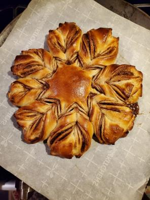

Cinnamon Star Bread

Description
A beautiful star shaped bread sweet cinnamon bread that pulls apart making it easy to share.
A cooler looking take on a cinnamon bun and equally delicious.
The cinnamon sugar exposed to the outside caramelizes in the oven which adds a crunchy outside, but still
allowing the inside to stay fluffy and tender. A special, festive treat that will be devoured instantly!
Ingredients
- 240g AP Flour
- 46g instant mashed potatoes/dried potato flakes
- 28g nonfat dry milk
- 198g to 227g lukewarm water, enough to make a soft, smooth dough
- 57g butter, at room temperatur
- 1 tsp vanilla extract
- 2 tsp instant yeast
- 25g granulated sugar
- 6g salt
Filling
- 1 large egg, beaten
- 99g granulated sugar
- 1 tablespoon cinnamon
Steps
- Combine all of the dough ingredients and mix and knead- by hand, mixer, or bread machine
to make a soft, smooth dough.
- Place dough in a lightly greased bowl, cover, and let it rise for 60 minutes until doubled in bulk
- Shaping:Divide the dough into four equal pieces. Shape into a ball, cover, and allowing them to rest for 15 minutes
- On a lightly greased or floured work surface, roll one piece of dough into a 10" circle. Place the circle on to a piece of parchment, then brush a thin coat
of beaten egg on the surface, then evenly sprinkle with 1/3 of the cinnamon sugar mix, leaving 1/4" of bare dough around the perimeter.
- Roll out second circle the same size as the first, and place it on top of the filling-covered circle. Repeat the layering process -egg, cinnamon sugar, dough circle- until the last circle of dough is put on, leaving it bare
- Place 2 1/" to 3" round cutter in the center of the dough circle as a guide. With a bench knife or sharp knie, cut the circle through all layer, from cutter to edge, into 16 equal strips.
- Using both hands, pick up two adjacent strips and twist them away from each other twice so that the top side is facing up again. Repeat with the rest so that you end up with eight pairs of strips.
- Pinch the pairs of strips together to create a star-like shape with eight points. Remove cutter
- Transfer the star on the parchment to a baking sheet. Cover the star and let it rise until it's puffy, about 45 minutes.
- While the star is rising, preheat the oven to 400F.
- Brush the star with a thin coat of beaten egg. Bake it for 12 to 15 minutes, until nicely golden brown with dark brown cinnamon streaks; the center should register 200F on a thermometer.
- Remove the bread from the oven and allow to cool for about 10 minutes before serving. Dust with confectioners' sugar and serve warm or at room temperature.
- Store any leftovers, well wrapped in plastic at room temperature for several days or freeze for longer. Reheat in oven at 350F for 15 minutes, tent it loosely with aluminum foil.